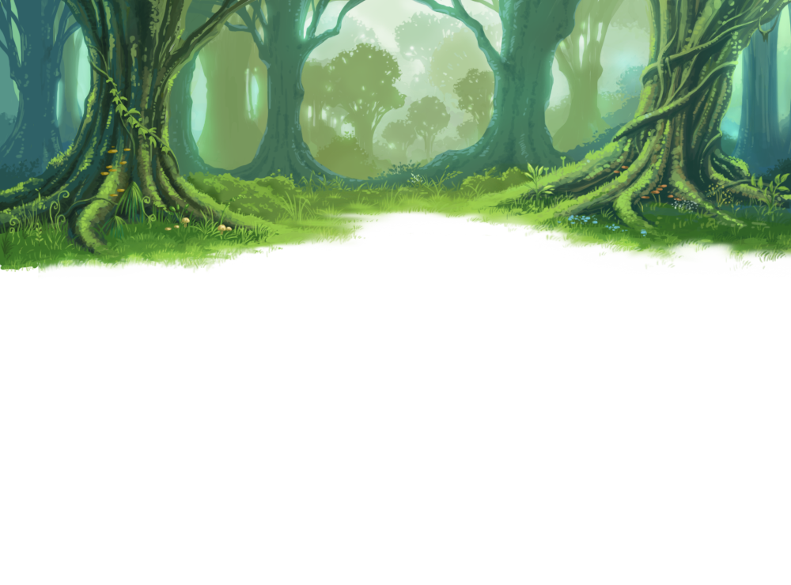

As you venture deeper into the enchanted forest,
a thunderous roar shatters the serene air.
Behold, the majestic dragon Fáfnir,
once a dwarf, now cursed by the gods for its insatiable greed.
It looms as a colossal threat to all inhabitants of this realm,
delighting in the agony and despair of its victims.
To vanquish Fáfnir is to etch your name into the annals of legend,
your tale echoing across the ages,
your valor celebrated for eternity.
For in the defeat of this ancient beast,
your glory shall endure as long as time itself.

You have encountered the final battle with the mighty dragon Fáfnir. You know it's the end of the journey, and by defeating it, you would become a living legend. Now, choose your action.
You bravely charged to Fáfnir and made a deep cut on its chest.
Mighty Dragon roar with anger and breathed fire on your.
Wat do you want to say to Fáfnir?
Under the shroud of night, you approached the sleeping dragon Fáfnir, and with a single decisive strike, ended its reign of terror, forever sealing its fate in the annals of legend.
what do you want to do next?
In the haunting aftermath of the battle, our valiant hero's fate takes a tragic turn. Despite their fearless charge and heroic effort, they succumb to the relentless onslaught of Fáfnir's fiery breath.
As life ebbs away, a somber realization dawns - their name will fade into obscurity, their deeds forgotten by all. No songs will be sung in their honor, no monuments raised in their memory. Their tale ends not with triumph and glory, but with a silent lament, a solitary echo lost in the winds of time.
As the knight knelt before Fáfnir, pledging eternal servitude in exchange for power, the very fabric of the realm quivered with dread. With each whispered oath, the dragon's influence grew, casting a sinister veil over the land.
Under the knight's darkened mantle, calamity unfurled like a malevolent tapestry. Villages lay in ruin, their inhabitants consumed by fear and despair. Crops withered beneath the shadow of Fáfnir's wings, and rivers ran thick with sorrow.
The knight, now a harbinger of doom, became the instrument of Fáfnir's will, orchestrating tragedy with every beat of their heart. With each passing day, the dragon's grip tightened, ensnaring the realm in a web of darkness from which there seemed to be no escape.
And as the echoes of suffering reverberated through the land, the knight's name became synonymous with terror, a grim reminder of the consequences of hubris and folly. In the end, there was naught but the chilling laughter of Fáfnir, echoing across a desolate landscape gripped tightly in the clutches of despair.
As the dragon, with a solemn nod, accepted the knight's proposal, a pact was forged that would reshape the very fabric of the realm. Together, they embarked on a journey that took them to every corner of the land, their presence a symbol of hope and strength.
Wherever they went, the people whispered tales of the knight and the dragon, their unlikely alliance sparking curiosity and awe. With each passing day, the darkness that once gripped the land began to recede, replaced by the warm embrace of dawn's light.
The knight, once a solitary figure on a quest for glory, found in the dragon a steadfast companion, their bond forged in the crucible of adversity. Together, they faced challenges that would have daunted even the bravest of souls, yet their resolve remained unyielding.
As they traversed mountains and valleys, forests and plains, the knight and the dragon became a beacon of hope for all who crossed their path. Where there was despair, they brought courage; where there was fear, they brought strength.
With the unparalleled might bestowed upon him by the dragon's heart, the knight forged an empire that stretched across the vast expanse of the known world. Cities crumbled beneath his armies, and nations trembled at the mere mention of his name. Yet, amidst the glory and splendor, a darkness began to seep into his soul, its tendrils wrapping around his heart like ivy around a dying tree.
As his dominion expanded, so too did the shadows within him, each victory souring with the weight of his sins. Yet, blinded by ambition, he pressed on, until his humanity was consumed in a blaze of fire and fury. In that moment, the knight's transformation was complete, his noble form twisted into that of a dragon, a grim testament to the consequences of his hubris.
In a blaze of fire and fury, the knight's humanity was stripped away, his form twisted and contorted until he stood not as a man, but as a dragon. And as the last remnants of his humanity faded into oblivion, the once noble knight became the very thing he had sworn to destroy, a monster born of his own hubris and folly.
The story of the dragon slayer echoed far and wide, spreading like wildfire across the lands. Tales of his bravery and valor became the stuff of legends, whispered around campfires and recounted in the hallowed halls of kings. His name was etched into the annals of history, a beacon of hope in a world shrouded in darkness.
Generations would pass, yet the memory of the dragon slayer endured, a testament to the indomitable spirit of mankind. His deeds became the subject of songs and sagas, inspiring countless souls to rise against tyranny and injustice. Though the world may change and empires may rise and fall, the legacy of the dragon slayer would endure, a shining light in the darkest of times.
And so, the tale of the dragon slayer lived on, passed down from generation to generation, a reminder of the power of courage and determination in the face of adversity. His legend would be told in every corner of the earth, a timeless tribute to the triumph of good over evil, and the enduring spirit of humanity.